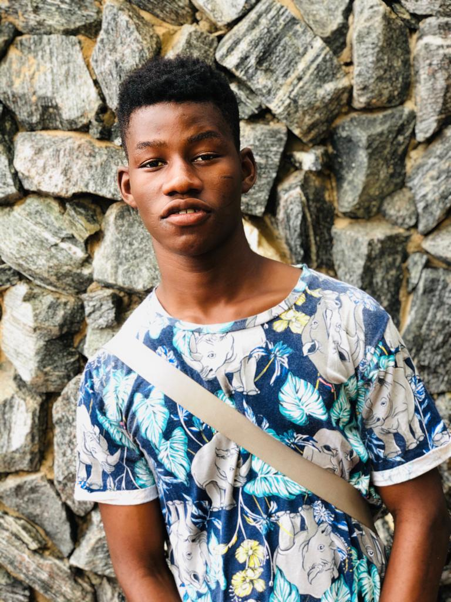

My name is ARAFEEN INUSAH and I'm 21 years of age. I was born in north-eastern region of Ghana,
Gambaga to be specific but grew up Old Ashongman, a suburb in the Greater Accra region where I
had my basis education. I then proceeded to KHSHTS, a second cycle in the Brong Ahafo region.
Where I pursued a course in General Arts. I was later admitted into UNIVERSITY OF GHANA
where i am currently studying bachelor of science in Information and Technology.
Below are my social
media handles.